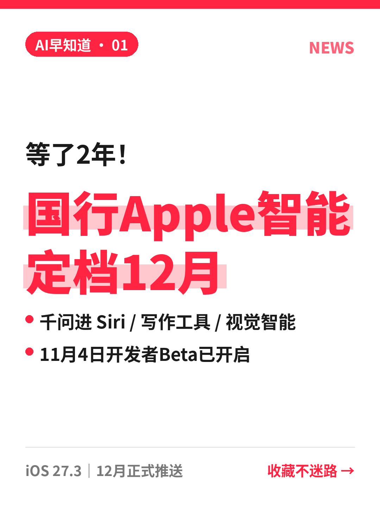

标题
🍎国行苹果AI来了！千问进Siri
正文
果粉们！国行Apple智能终于有准信了🎉 📅 时间线 · 10月31日：苹果宣布首批Apple智能功能将进入中国 · 11月4日起：开发者Beta测试 · 12月：随 iOS 27.3 正式推送给国内用户 🤝 和千问怎么合作？ 苹果和阿里合作，在部分体验里加入通义千问支持： ✅ Siri ✅ 写作工具 ✅ 视觉智能 ⚠️ 几个容易误会的点 1️⃣ Apple智能主体还是苹果自家模型驱动，千问是在部分功能里提供支持 2️⃣ 阿里表示不会用用户的请求和回复来训练模型 3️⃣ 普通用户要等12月正式版，现在只有开发者能体验 你最想先用哪个功能？我先蹲写作工具✍️
话题
#苹果 #AppleIntelligence #通义千问 #iOS #AI资讯 #数码科技
参考来源（不用发）
https://buncosmos.ai/news/china-ai-weekly-2-november-2026 https://aibriefing.dev/